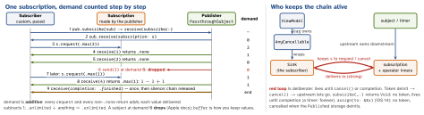

ios-swift · folio
In one line: A Publisher is a recipe; subscribe(_:) makes it create a
Subscription and hand it to the Subscriber, which requests
a demand. The publisher may send at most that many values, then one
completion. Demand is Combine’s backpressure — but sink/assign ask
.unlimited, so a push source that outruns its consumer must drop or buffer.
Download PDF Print view LaTeX source


The three protocols
Publisher<Output, Failure: Error>: one requirement,receive(subscriber:); you callsubscribe(_:). Operators are mostly structs wrapping upstream (Publishers.Map<Upstream, T>);Shareis a class.Subscriber(Input/Failuremust match):receive(subscription:),receive(_:) -> Subscribers.Demand(“how many more”),receive(completion:)with.finished|.failure(e).Subscription: Cancellable:request(_:)+cancel(). Cancel is terminal and silent: no completion event follows.- Demand
.none/.max(n)/.unlimited: values ≤ demand, ≤ 1 completion, calls serial.
Example — a paced subscriber (real backpressure)
final class OneAtATime: Subscriber {
typealias Input = Data; typealias Failure = Never
private var sub: Subscription? // needed to ask again
func receive(subscription s: Subscription) {
sub = s; s.request(.max(1)) // demand 1
}
func receive(_ d: Data) -> Subscribers.Demand {
upload(d) { [weak self] in self?.sub?.request(.max(1)) }
return .none // pause until upload ends
}
func receive(completion: Subscribers.Completion<Never>) {
sub = nil // drop the loop
}
}
frames.buffer(size: 20, prefetch: .keepFull, whenFull: .dropOldest)
.subscribe(OneAtATime()) // Void: no AnyCancellableBackpressure in practice
buffer(size:prefetch:whenFull:)absorbs bursts. Prefetch.keepFull(fill at subscription, stay full) or.byRequest; when full.dropNewest·.dropOldest·.customError { …}(fails the stream).- Demand-shaping operators:
flatMap(maxPublishers: .max(n))(≤ n inner subscriptions),collect(n)(batches),.values(1 per loop turn); rate-cutting:throttle,debounce. - See it:
.print("tag")logs every request, value, completion, cancel;handleEvents(receiveRequest:)hooks them.
Subjects in depth
- Classes conforming to
Subject:send(_:),send(completion:),send(subscription:)— so a subject can subscribe to a publisher (pub.subscribe(subject)) and become one multicast point. PassthroughSubject: no initial value, no buffer — an event sent ininit, before the view subscribed, is gone.CurrentValueSubject:.valuereadable synchronously; setting it issend; a new subscriber gets the current value first.- After
send(completion:)a subject is finished for good: latersends ignored, late subscribers get only the completion. @Published’s$xacts like aCurrentValueSubject<T, Never>that fires on willSet.
Schedulers — where code runs
Scheduler=now+schedule(…)(now / after / repeating):DispatchQueue,RunLoop,OperationQueue,ImmediateScheduler.- No
receive(on:)→ delivered on the thread that emitted:dataTaskPublisher= URLSession’s background queue,@Published= the setter’s thread,NotificationCenter.publisher= the poster’s thread. receive(on:)re-schedules every downstream event, values and completion. OnDispatchQueue.mainit is an async hop even when already on main — the first value lands a run-loop turn later.subscribe(on:)moves subscribe, request and cancel upstream (docs). A synchronous publisher (Just,[1,2].publisher) emits insiderequest, so its values move too; URLSession still emits on its own queue.- Time operators take a scheduler and deliver on it:
debounce,throttle,delay,timeout,measureInterval. Inject it → testable.
Traps
- Discarded token:
Just(1).sink{…}“works” (it finishes synchronously before the token dies); the same line on a network publisher never fires. - Returning
.noneand never callingrequestagain stalls the stream — no error, no completion, nothing. .unlimited+ fast producer +receive(on: .main)= main queue flooded. Cut upstream:throttle,collect,buffer(….dropOldest).sendinto one subject from several threads at once breaks the serial rule — funnel through one queue or actor.- Cycle is not only in
sink: any stored operator closure (map,flatMap,handleEvents) that capturesselfcloses the loop too.
Remember
Subscribe → request → ≤ demand values → one ending. Push can’t wait: drop or buffer. Upstream owns downstream; the token owns the loop.